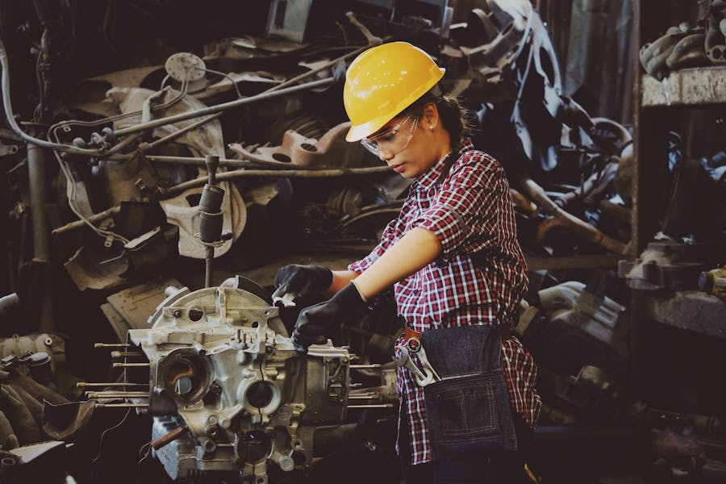

Wskaźniki emisji GHG dla polskiej stali produkowanej w piecu łukowym elektrycznym (EAF). Dane oparte na EU ETS, zweryfikowane przez SPC. Porównanie z trasami BF-BOF i danymi generycznymi.

Polska zajmuje wyjątkową pozycję w europejskim hutnictwie: jest jednym z nielicznych dużych producentów stali na kontynencie, gdzie technologia pieca łukowego elektrycznego (EAF — Electric Arc Furnace) odgrywa dominującą rolę. Udział EAF wynosi ok. 68% krajowej produkcji stali, przy czym cała stal produkowana w zakładach zlokalizowanych w Warszawie i Zawierciu pochodzi wyłącznie z przetopowych pieców łukowych.
Piec łukowy elektryczny topni złom stalowy przy użyciu energii elektrycznej, eliminując konieczność redukcji rudy żelaza koksem w wielkim piecu. Eliminuje to ok. 70% emisji CO₂ charakterystycznych dla trasy wielkopiecowej (BF-BOF — Blast Furnace / Basic Oxygen Furnace), co czyni polską stal EAF jednym z nisko-emisyjnych materiałów konstrukcyjnych dostępnych na rynku europejskim.
Bazy generyczne, w tym ecoinvent, modelują polską stal jako uśrednioną mieszankę technologii BF-BOF i EAF, przypisując jej wskaźnik emisji ok. 1,12 kg CO₂e/kg. Wartość ta jest niemal dwukrotnie wyższa od rzeczywistych danych dla zakładów EAF operujących w Polsce, co stanowi jedną z najpoważniejszych metodologicznych nieprawidłowości w LCA dla polskich wyrobów budowlanych.
Wartości GWP dla granic systemowych A1–A3 (od kołyski do bramy fabrycznej), zgodnie z EN 15804+A2.
| Ścieżka produkcji | GWP A1–A3 [kg CO₂e/kg] | Technologia | Źródło |
|---|---|---|---|
| Polska EAF (kęsy) | 0,62 | Piec łukowy, złom | EU ETS / poLCA 2024 |
| Polska EAF (blachy walcowane) | 0,71 | EAF + walcownia na gorąco | EU ETS / poLCA 2024 |
| Europejska śr. BF-BOF | 1,78 | Wielki piec + konwertor | Worldsteel 2022 |
| Globalny miks stalowniczy | 1,91 | Mix BF-BOF + EAF | Worldsteel 2022 |
| ecoinvent 3.10 PL | 1,12 | Mix krajowy* | ecoinvent |
* ecoinvent nie uwzględnia specyfiki polskiej struktury produkcji opartej na EAF — modeluje uśredniony miks krajowy, zawyżając tym samym wskaźnik emisji dla zakładów EAF. Źródła: EU ETS (raportowanie instalacji), Worldsteel Association 2022, ecoinvent v3.10.
Piec łukowy elektryczny (EAF) topni złom stalowy przy użyciu energii elektrycznej o wysokim natężeniu, zamiast redukować rudę żelaza koksem w wielkim piecu. To fundamentalna różnica technologiczna, która eliminuje trzy główne źródła emisji CO₂ w trasie BF-BOF:
Polska specjalizacja w przetopie złomu nie jest przypadkowa — wynika z historii przemysłu (brak inwestycji w nowe wielkie piece po 1990 r.), dostępności złomu z bogatego rynku krajowego oraz strategicznych decyzji głównych inwestorów (ArcelorMittal). Dziś jest to przewaga konkurencyjna w erze wymagań środowiskowych.
Polskie zakłady stalowe objęte są europejskim systemem handlu uprawnieniami do emisji EU ETS od 2005 roku. System ten nakłada obowiązek rocznego raportowania wszystkich emisji bezpośrednich (zakres 1) z instalacji, z weryfikacją przez niezależne, akredytowane jednostki weryfikujące.
Wskaźniki emisji GHG prezentowane w bazie poLCA dla sektora stalowego są bezpośrednio wywiedzione z danych EU ETS, uzupełnionych danymi GUS dotyczącymi zużycia energii elektrycznej i surowców. Tak ustalone wartości uśrednione zostały skonfrontowane z danymi Stowarzyszenia Producentów Cementu i Stali (SPC) dla zapewnienia spójności.
Wieloletnia seria danych EU ETS potwierdza stabilność wskaźnika emisji dla zakładów EAF w przedziale 0,58–0,66 kg CO₂e/kg dla kęsów stalowych, w zależności od roku i struktury wsadu (udział złomu poklasycznego vs złomu niskiej jakości). Wartość 0,62 kg CO₂e/kg stanowi reprezentatywną średnią za lata 2021–2023.
W kontekście LCA konstrukcji budowlanych i drogowych warto uwzględnić porównanie między stalą EAF a innymi materiałami. Przykład ilustrujący:
1 tona stali EAF z polskiej walcowni (blachy) generuje ok. 0,71 t CO₂e w modułach A1–A3. Dla porównania, 1 tona typowej mieszanki mineralno-asfaltowej HMA (betonu asfaltowego) generuje ok. 0,8–1,2 t CO₂e/t przy uwzględnieniu lepiszcza bitumicznego oraz procesów otaczania i zagęszczania. Polska stal EAF jest zatem w przeliczeniu masowym mniej emisyjna niż asfalt, co ma istotne znaczenie dla analiz LCA dróg i budowli inżynierskich.
To porównanie jest szczególnie ważne w kontekście zamówień publicznych na roboty drogowe, gdzie wymagania środowiskowe coraz częściej dotyczą całego zakresu materiałowego inwestycji, a nie tylko wybranych komponentów.
Zasady stosowania wskaźników poLCA dla polskiej stali:
Stosowanie wskaźnika 0,62 kg CO₂e/kg zamiast danych ecoinvent (1,12 kg CO₂e/kg) może zmienić wynik GWP projektu EPD dla wyrobu stalowego o ponad 80% — co potwierdzają analizy opisane na blogu poLCA.
Szczegółowa analiza różnic między wskaźnikiem EAF a danymi europejskiej średniej — wpływ na wynik EPD.
Polska stal z EAF a europejska średnia — dlaczego wybór wskaźnika LCI zmienia wynik EPD o ponad 100% →Mapa zniekształceń polskiego sektora budowlanego — które branże tracą, a które zyskują na uśrednianiu danych europejskich.
Analiza Sektorowa — mapa zniekształceń →